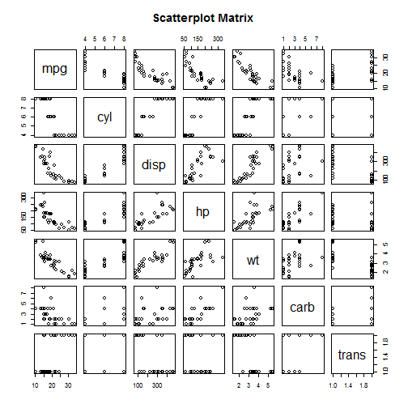

Emeka Akpunonu Developing Data Products Course Project 2
Miles Per Gallon Prediction App
Introduction - Value Proposition
This app is called the Miles Per Gallon App. This app is a very essential tool for today's car buy buyer. In times like this when gas prices are ever rising in a struggling economy, this app enables decision makers navigate to their ideal vehicle.
Features
Benefits
Reliable Algorithm
This app is built using data collected by top motor magazine, Motor Trends, the estimates are reliable
Ranges of Estimates Provided
This app factors in the fact that even for identical characteristics, miles per gallons values vary from manufacturer to manufacturer; thus 3 estimates are provided for each output - a high, an average/expected, and a low.
User-Driven
This app ensures to leave the power in the hands of the decision maker. With a quick optimized algorithm and an intuitive interface it lets you input predictor values of choice and stay in control.
Insight to Data used to build a robust MPG algorithm
You can be sure to trust this outstanding app. It was built to be robust; encompassing the trends in the scatterplot below. The key variables in the scatterplot matrix are discussed in the next slide.

Prediction Algorithm
Below is the output of the coefficients of the mulitple regression algorithm behind the app.
The algorithm is based on the values of the following key influencers of MPG:
- Number of Cylinders in the Vehicle (cyl).
- Number of Carburetors in the Vehicle (carb).
- Transmission type - auto or manual (am).
Instructions to get started
This app is simple and intuitive and will get you going in little to no time. All you have to do is input values for number of cylinders, number of carburetors and pick from the drop down menu indicating a manual or auto transmission, and voila! you get a range of estimates for the expected miles per gallon.
To help boost your confidence in your understanding of the model. The quiz below was put together. Look at the question, try to answer it with the use of the app, then come back and check your answer until you get it right. Enjoy!
Given a manual transmission vehicle with 6 carburetors and 4 cylinders? what is the expected Miles Per Gallon?
20.5 miles per gallon.
22.8 miles per gallon.
Use the MPG predictor model. Select manual transmission, 6 for carb and 4 for cyl.
You can also obtain the 95% confidence interval using the MPG Predictor App. In this case it will be 19.1 and 26.4 miles per gallon.